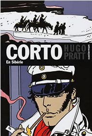

Corto Maltese en Sibérie est l'un des premiers albums de la série à être publié sous forme de bande-dessinée sans être préalablement parut sous forme de feuilleton dans Pif Gadget. Libéré des contraintes que l'hebdomadaire lui imposait, Hugo Pratt fait publier en 1979 une aventure de 128 pages, dont l'élaboration lui aura pris prêt de trois ans et demi, intitulée Corto Maltese en Sibérie.
Le récit se déroule de novembre 1918 à avril 1920, en Chine et en Sibérie Orientale, thêatre de la guerre civile russe. Corto, qui a retrouvé Raspoutine à Hong-Kong, est chargé par la secte des Lanternes Rouges de récupérer le trésor impérial de Russie, aux mains de l'amiral Alexandre Koltchak, chef d'un gouvernement provisoire contre-révolutionnaire russe à Omsk, en Sibérie. Corto, au cours de son périple en Mandchourie puis en Sibérie sera successivement confronté aux forces des seigneurs des guerre chinois, celles de l'amiral Koltchak, aux communistes mongols, aux forces japonaises d'intervention en Sibérie, et à la Division Sauvage de Roman von Ungern-Sternberg, le célèbre Baron Fou. Durant cette histoire, Corto rencontrera à nouveau plusieurs personnages historiques, principalement des militaires et seigneurs de guerre impliqués dans la guerre civile russe: l'ataman Grigori Semenov, le seigneur de guerre Roman von Ungern-Sternberg et le leader communiste mongol Soukhé Bator.
